Recall - Heated Windshield Washer Module Short Circuit: Overview
SAFETYBulletin No.: 10153B
Date: July 20, 2010
Subject: 10153A - Heated Windshield Washer Module Short Circuit - Permanently Disable and Remove Module
Models:
2006-2009 Buick Lucerne
2008-2009 Buick Enclave
2006-2009 Cadillac DTS
2007-2009 Cadillac Escalade, Escalade ESV, Escalade EXT
2008-2009 Cadillac CTS
2007-2009 Chevrolet Avalanche, Silverado, Suburban, Tahoe
2009 Chevrolet Traverse
2007-2009 GMC Acadia, Sierra, Yukon, Yukon XL
2006-2009 HUMMER H2
2007-2009 Saturn OUTLOOK
Equipped with Heated Washer Fluid System (RPO XA7/CHW)
Supercede:
This bulletin is being revised to include a note in the service procedure for dealers to confirm that the customer is aware that this safety recall is being performed on their vehicle prior to performing the repair. A T labor code for customers who refuse to have the recall performed. This labor code will NOT close the recall. If a customer refuses to have the recall performed, dealers are to provide the customer with a copy of the "Notice to Customer" document contained in this bulletin, record on the repair order "customer declined recall repair" and, if possible, have the customer sign the repair order. Request that the letter be placed in the vehicle glovebox for future reference by subsequent owners. If at a later date the customer, or a new owner, decides to have the recall performed, perform the repair and submit the claim using the appropriate V labor code. A clarification in the Q&A regarding proof of vehicle ownership. Please discard all copies of bulletin 10153A, issued July 2010.
Condition
General Motors has decided that a defect, which relates to motor vehicle safety, exists in certain 2006-2009 model year Buick Lucerne; Cadillac DTS; HUMMER H2; 2008-2009 model year Buick Enclave; Cadillac CTS; 2007-2009 model year Cadillac Escalade, Escalade ESV, Escalade EXT; Chevrolet Avalanche, Silverado, Suburban, Tahoe; GMC Acadia, Sierra, Yukon, Yukon XL; Saturn OUTLOOK; and 2009 model year Chevrolet Traverse vehicles equipped with a heated washer fluid system (RPO XA7/CHW). A recall was implemented on some vehicles in 2008 to add a fuse to the HWFS control circuit harness to address the potential consequences of a printed circuit board electrical short. However, there have been new reports of thermal incidents on HWFS modules after this improvement was installed. These incidents resulted from a new failure mode attributed to the device's thermal protection feature. Their significance varies from minor distortion to considerable melting of the plastic around the HWFS fluid chamber. In some circumstances, it is possible for the heated washer module to cause a fire.
Correction
Dealers/retailers are to permanently disable and remove the heated washer fluid system and compensate the customer for the loss of the feature.
Vehicles Involved
Involved are certain 2006-2009 model year Buick Lucerne; Cadillac DTS; HUMMER H2; 2008-2009 model year Buick Enclave; Cadillac CTS; 2007-2009 model year Cadillac Escalade, Escalade ESV, Escalade EXT; Chevrolet Avalanche, Silverado, Suburban, Tahoe; GMC Acadia, Sierra, Yukon, Yukon XL; Saturn OUTLOOK; and 2009 model year Chevrolet Traverse vehicles equipped with a heated washer fluid system (RPO XA7/CHW), and built within these VIN breakpoints:
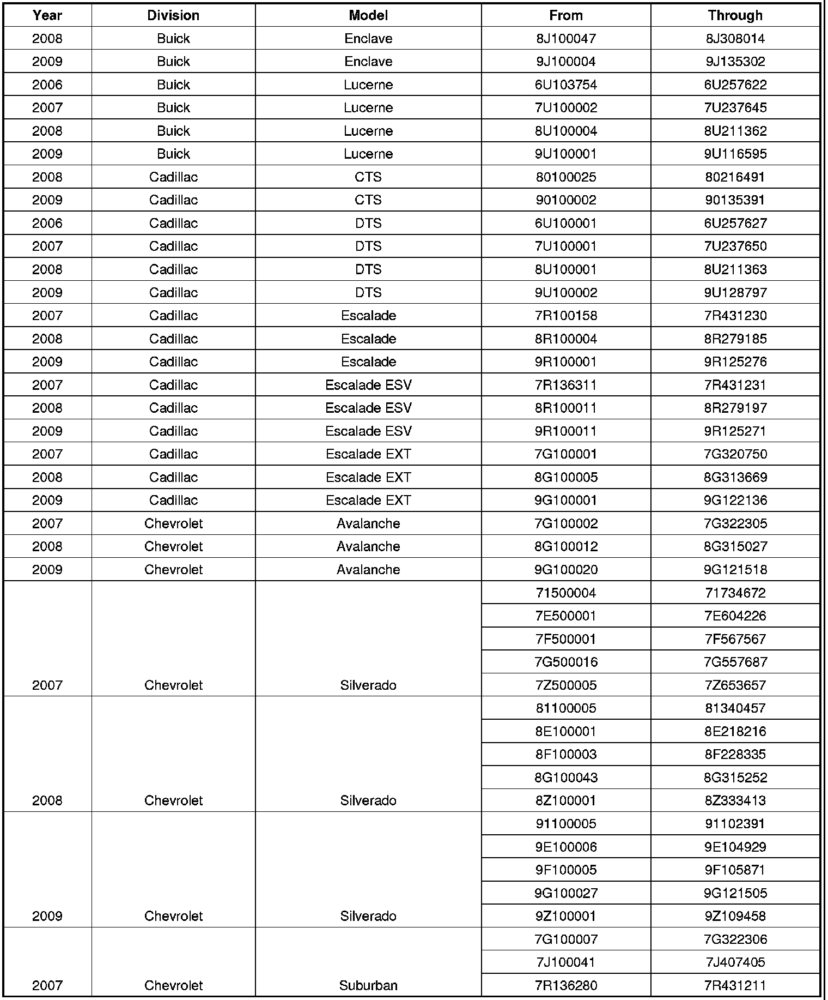
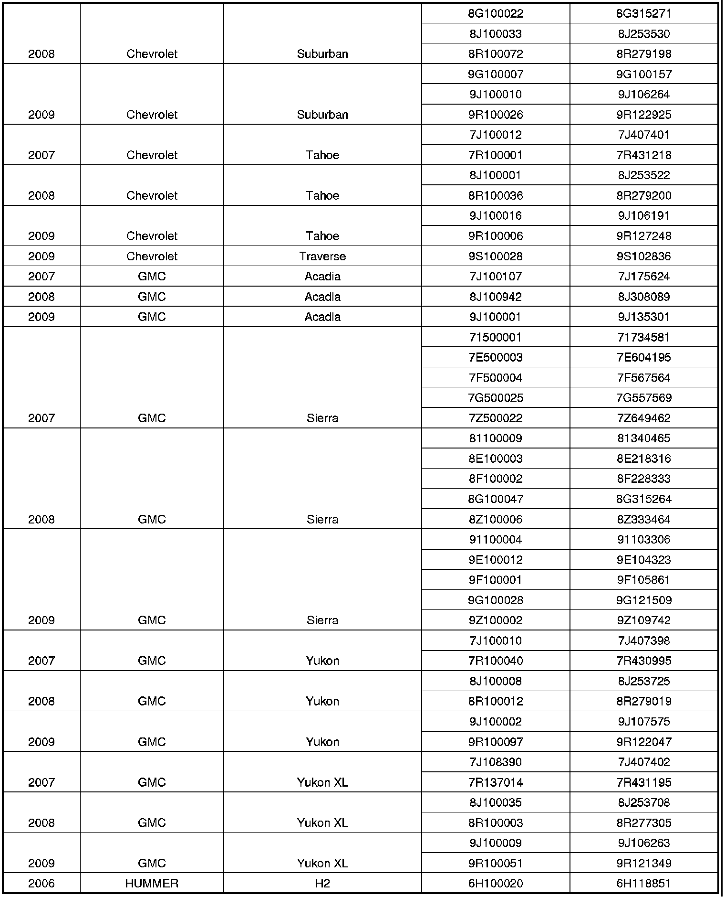
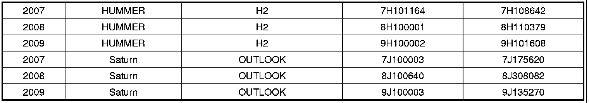
Important
Dealers/retailers are to confirm vehicle eligibility prior to beginning repairs by using the Investigate Vehicle History link. Not all vehicles within the above breakpoints may be involved.
For dealers/retailers with involved vehicles, a listing with involved vehicles containing the complete vehicle identification number, customer name, and address information has been prepared and will be provided to US and Canadian dealers/retailers through the GM GlobalConnect Recall Reports, or sent directly to export dealers. Dealers/retailers will not have a report available if they have no involved vehicles currently assigned.
The listing may contain customer names and addresses obtained from Motor Vehicle Registration Records. The use of such motor vehicle registration data for any purpose other than follow-up necessary to complete this recall is a violation of law in several states/provinces/countries. Accordingly, you are urged to limit the use of this report to the follow-up necessary to complete this recall.
Parts Information
No parts are required for this recall.
Customer Reimbursement - For GM US
All customer requests for reimbursement of previously paid repairs for the recall condition will be handled by the Customer Assistance Center, not by dealers.
A General Motors Customer Reimbursement Procedure and Claim Form is included with the customer letter.
Note
(For GM US Only) Refer to the GM Service Policies and Procedures Manual, section 6.1.12, for specific procedures regarding customer reimbursement and the form.
Customer Reimbursement - For Canada and Export
Customer requests for reimbursement of previously paid repairs for the recall condition are to be submitted to the dealer by June 8, 2011.
All reasonable customer paid receipts should be considered for reimbursement. The amount to be reimbursed will be limited to the amount the repair would have cost if completed by an authorized General Motors dealer.
When a customer requests reimbursement, they must provide the following:
- Proof of ownership at time of repair.
- Original paid receipt confirming the amount of repair expense(s) that were not reimbursed, a description of the repair, and the person or entity performing the repair.
Claims for customer reimbursement on previously paid repairs are to be submitted as required by WINS or GWM.
Note
Refer to the GM Service Policies and Procedures Manual, section 6.1.12, for specific procedures regarding customer reimbursement verification.
Customer Reimbursement - For Saturn US Only
All customer requests for reimbursement for previous repairs for the recall condition are handled by submitting a recall reimbursement claim form directly to Saturn retailers for processing; however, if customers choose, they may file a claim through the Saturn Customer Assistance Center.
A Saturn Customer Reimbursement Procedure and Claim Form are included with the customer letter.
Courtesy Transportation - For US and Canada
The General Motors Courtesy Transportation program is intended to minimize customer inconvenience when a vehicle requires a repair that is covered by the New Vehicle Limited Warranties. The availability of courtesy transportation to customers whose vehicles are within the warranty coverage period and involved in a product program is very important in maintaining customer satisfaction. Dealers/retailers are to ensure that these customers understand that shuttle service or some other form of courtesy transportation is available and will be provided at no charge. Dealers should refer to the General Motors Service Policies and Procedures Manual for Courtesy Transportation guidelines.
Claim Information
1. Submit a claim using the table below.
2. Courtesy Transportation - submit as Net Item under the repair labor code.
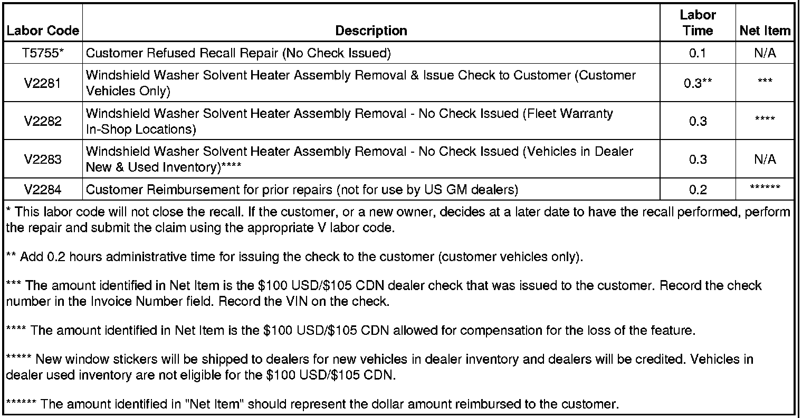
Customer Notification - For US and Canada
General Motors will notify customers of this recall on their vehicle (see copy of customer letter included with this bulletin).
Customer Notification - For Export
Letters will be sent to known owners of record located within areas covered by the US National Traffic and Motor Vehicle Safety Act. For owners outside these areas, dealers should notify customers using the attached sample letter.
Dealer Recall Responsibility - For US and Export (US States, Territories, and Possessions)
The US National Traffic and Motor Vehicle Safety Act provides that each vehicle that is subject to a recall of this type must be adequately repaired within a reasonable time after the customer has tendered it for repair. A failure to repair within sixty days after tender of a vehicle is prima facie evidence of failure to repair within a reasonable time. If the condition is not adequately repaired within a reasonable time, the customer may be entitled to an identical or reasonably equivalent vehicle at no charge or to a refund of the purchase price less a reasonable allowance for depreciation. To avoid having to provide these burdensome remedies, every effort must be made to promptly schedule an appointment with each customer and to repair their vehicle as soon as possible. In the recall notification letters, customers are told how to contact the US National Highway Traffic Safety Administration if the recall is not completed within a reasonable time.
Dealer Recall Responsibility - All
All unsold new vehicles in dealers' possession and subject to this recall must be held and inspected/repaired per the service procedure of this recall bulletin before customers take possession of these vehicles.
Dealers are to service all vehicles subject to this recall at no charge to customers, regardless of mileage, age of vehicle, or ownership, from this time forward.
Customers who have recently purchased vehicles sold from your vehicle inventory, and for which there is no customer information indicated on the dealer listing, are to be contacted by the dealer. Arrangements are to be made to make the required correction according to the instructions contained in this bulletin. A copy of the customer letter is provided in this bulletin for your use in contacting customers. Recall follow-up cards should not be used for this purpose, since the customer may not as yet have received the notification letter.
In summary, whenever a vehicle subject to this recall enters your vehicle inventory, or is in your dealership for service in the future, you must take the steps necessary to be sure the recall correction has been made before selling or releasing the vehicle.
"An unattended (vehicle parked - key not in the "ON" position) under hood fire that can occur at any time and possibly involve nearby vehicles or structures."
If the customer still refuses, provide the customer with a copy of the "Notice to Customer" document contained in this bulletin, record "customer declined recall repair" on the repair order and, if possible, have the customer sign the repair order. Retain this repair order at the dealership.

Disclaimer
SAFETY
Bulletin No.: 08048C
Date: April 28, 2009
Subject: 08048C - Heated Windshield Washer Module Short Circuit - Add Wire Harness
Models:
2006-2008 Buick Lucerne
2008 Buick Enclave
2006-2008 Cadillac DTS
2007-2008 Cadillac Escalade, Escalade ESV, Escalade EXT
2007-2008 Chevrolet Avalanche, Silverado, Suburban, Tahoe
2007-2008 GMC Acadia, Sierra, Yukon, Yukon XL
2006-2008 HUMMER H2
2007-2008 Saturn OUTLOOK
Equipped with Heated Washer Fluid System
Supercede:
The service procedure in this bulletin has been revised to include verification that the fluid system dispenses heated fluid. Please discard all copies of bulletin 08048B, issued October 2008.
Condition
General Motors has decided that a defect, which relates to motor vehicle safety, exists in certain 2006-2008 model year Buick Lucerne; Cadillac DTS; HUMMER H2 vehicles; 2007-2008 model year Cadillac Escalade, Escalade ESV, Escalade EXT; Chevrolet Avalanche, Silverado, Suburban, Tahoe; GMC Acadia, Sierra, Yukon, Yukon XL; Saturn OUTLOOK vehicles; and 2008 model year Buick Enclave vehicles equipped with a heated washer fluid system. A short circuit on the printed circuit board for the washer fluid heater may overheat the control-circuit ground wire. This may cause other electrical malfunctions, create an odor, or cause smoke. In rare cases, it may cause a fire.
Correction
Dealers/retailers are to install a wire harness with an in-line fuse.
Vehicles Involved
Involved are certain 2006-2008 model year Buick Lucerne; Cadillac DTS; HUMMER H2 vehicle; 2007-2008 model year Cadillac Escalade, Escalade ESV, Escalade EXT; Chevrolet Avalanche, Silverado, Suburban, Tahoe; GMC Acadia, Sierra, Yukon, Yukon XL; Saturn OUTLOOK vehicles; and 2008 model year Buick Enclave vehicles equipped with a heated washer fluid system and built within these VIN breakpoints:
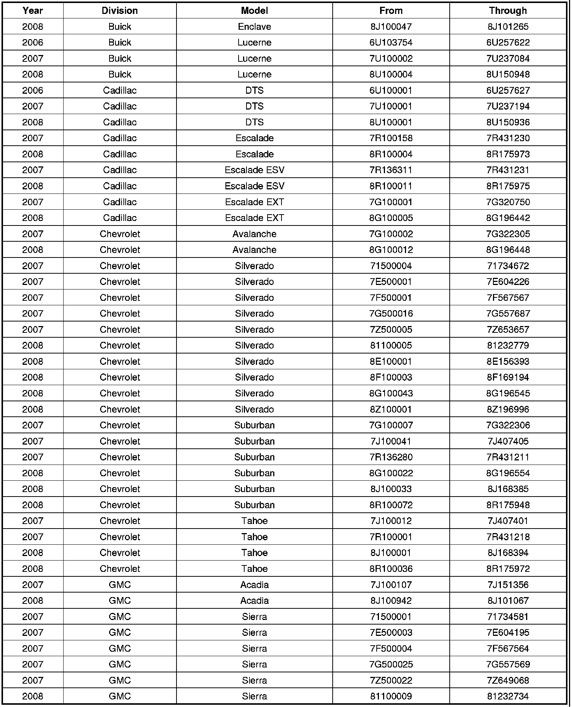
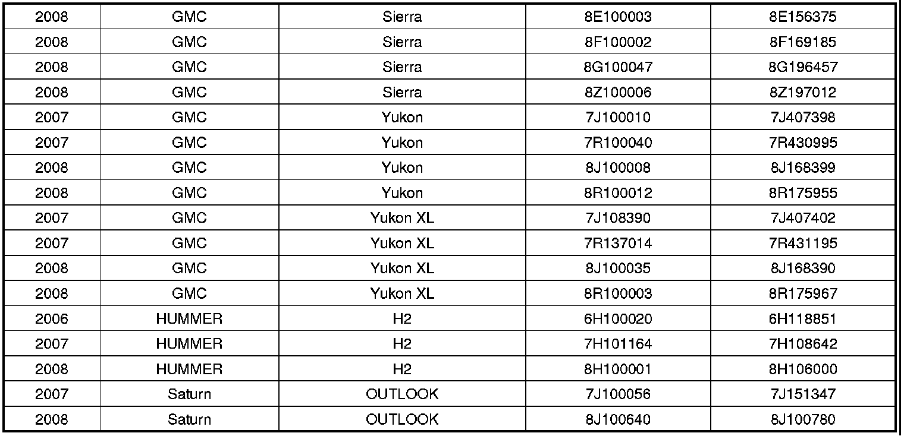
Important
Dealers/retailers are to confirm vehicle eligibility prior to beginning repairs by using the system(s) below. Not all vehicles within the above breakpoints may be involved. - GM dealers and Canadian Saturn/Saab retailers should use GMVIS. - Saturn US retailers should use the 'Investigate Vehicle History' link on the Global Warranty Management application within DealerWorld.
For dealers/retailers with involved vehicles, a listing with involved vehicles containing the complete vehicle identification number, customer name, and address information has been prepared and will be provided through the applicable system listed below. Dealers/retailers will not have a report available if they have no involved vehicles currently assigned.
- US GM and Saturn dealers/retailers - GM DealerWorld Recall Information
- Canadian GM/Saturn/Saab dealers/retailers - GMinfoNet Recall Reports
- Export dealers - sent directly to dealers
The listing may contain customer names and addresses obtained from Motor Vehicle Registration Records. The use of such motor vehicle registration data for any purpose other than follow-up necessary to complete this recall is a violation of law in several states/provinces/countries. Accordingly, you are urged to limit the use of this report to the follow-up necessary to complete this recall.
Parts Information
GM, Saturn Canada Only: Parts required to complete this recall are to be obtained from General Motors Service and Parts Operations (GMSPO). Please refer to your "involved vehicles listing" before ordering parts. This part is not eligible for RIM Management. Normal orders should be placed on a DRO = Daily Replenishment Order. In an emergency situation, parts should be ordered on a CSO = Customer Special Order.
Saturn US Only: A pre-shipment of the required parts to perform this recall has been sent to involved Saturn US retailers from Saturn Service Parts Operations (SSPO).
Jumper Harness with In-Line Fuse
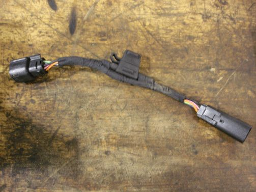
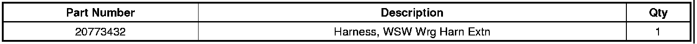
Service Procedure
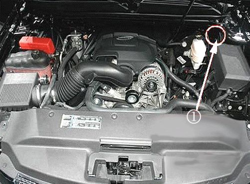
Important
The windshield solvent heater module (1) is located on the driver's side of the engine compartment near the front fender upper brace (if equipped), master cylinder reservoir, and lower plenum panel. For the Cadillac DTS and Buick Lucerne, the windshield solvent heater module is mounted to the front of dash on the passenger's side of the engine compartment.
1. Locate the windshield solvent heater module.
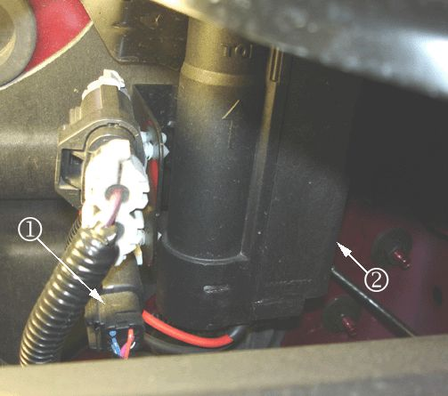
2. Disconnect the windshield solvent heater module wire harness (1) from the heater module (2).
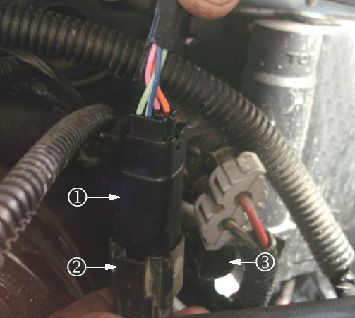
3. Connect the jumper harness with the in-line fuse (1) to the windshield solvent heater module wire harness (2) as shown in the illustration.
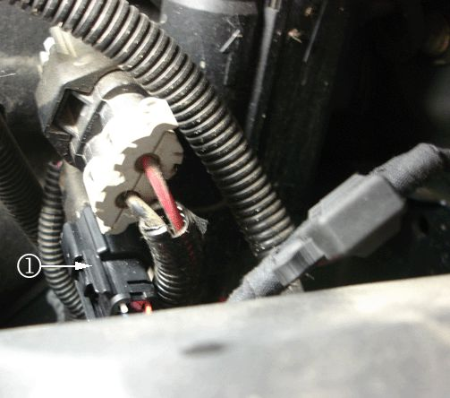
4. Connect the other end of the jumper harness into the connector (1) at the windshield solvent heater module.
5. Ensure that the jumper harness and windshield solvent heater module wire harness are routed and secured properly.
6. For vehicles that previously had the 60 amp heated windshield washer fuse removed, retrieve the fuse from the glove compartment and reinstall the fuse.
Important
It may take up to 40 seconds for the heated washer fluid system to dispense heated fluid.
7. Verify the operation of the heated washer fluid system. Ensure the system dispenses heated fluid.
Claim Information - GM, Saturn Canada Only
Submit a Product Recall Claim with the information indicated below:
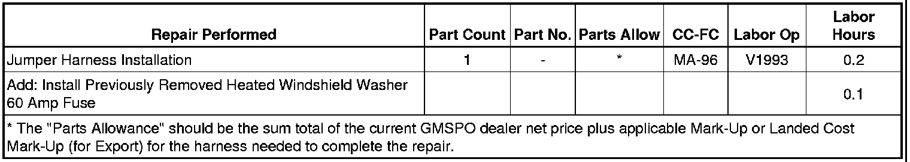
Refer to the General Motors WINS Claims Processing Manual for details on Product Recall Claim Submission.
Claim Information - Saturn US Only
1. To receive credit, submit a claim with the information below:
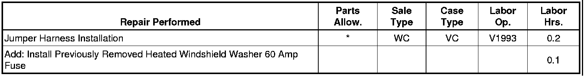
* The parts allowance should be the sum total of the current SSPO retailer net price plus 40% of all parts required for the repair.
Customer Notification - For US and Canada
General Motors notified customers of this recall on their vehicle in September 2008.
Customer Notification - For Export
Letters were sent to known owners of record located within areas covered by the US National Traffic and Motor Vehicle Safety Act.
Dealer Recall Responsibility - For US and Export (US States, Territories, and Possessions)
The US National Traffic and Motor Vehicle Safety Act provides that each vehicle that is subject to a recall of this type must be adequately repaired within a reasonable time after the customer has tendered it for repair. A failure to repair within sixty days after tender of a vehicle is prima facie evidence of failure to repair within a reasonable time. If the condition is not adequately repaired within a reasonable time, the customer may be entitled to an identical or reasonably equivalent vehicle at no charge or to a refund of the purchase price less a reasonable allowance for depreciation. To avoid having to provide these burdensome remedies, every effort must be made to promptly schedule an appointment with each customer and to repair their vehicle as soon as possible. In the recall notification letters, customers are told how to contact the US National Highway Traffic Safety Administration if the recall is not completed within a reasonable time.
Dealer Recall Responsibility - All
All unsold new vehicles in dealers' possession and subject to this recall must be held and inspected/repaired per the service procedure of this recall bulletin before customers take possession of these vehicles.
Dealers are to service all vehicles subject to this recall at no charge to customers, regardless of mileage, age of vehicle, or ownership, from this time forward.
Customers who have recently purchased vehicles sold from your vehicle inventory, and for which there is no customer information indicated on the dealer listing, are to be contacted by the dealer. Arrangements are to be made to make the required correction according to the instructions contained in this bulletin. A copy of the customer letter is provided in this bulletin for your use in contacting customers. Recall follow-up cards should not be used for this purpose, since the customer may not as yet have received the notification letter.
In summary, whenever a vehicle subject to this recall enters your vehicle inventory, or is in your dealership for service in the future, you must take the steps necessary to be sure the recall correction has been made before selling or releasing the vehicle.